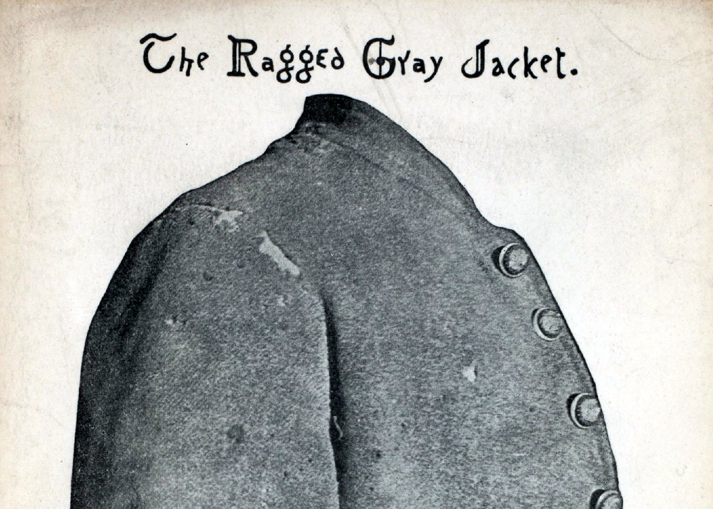
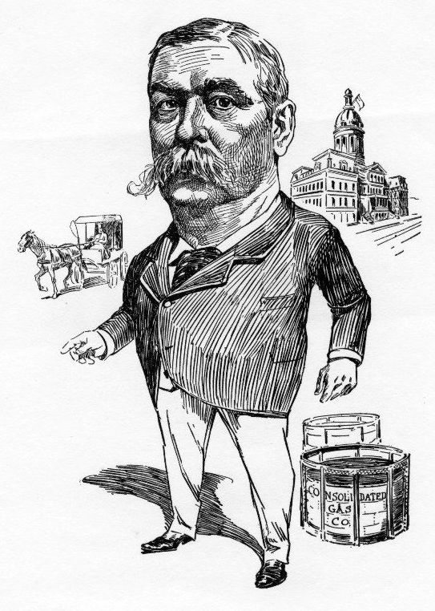

![]()
As Baltimore begins a review of the city’s Confederate monuments, I’ve been doing some research on the history of these monuments trying to understand the city in which the monuments were originally erected. I was excited to find a “sensible letter” from Charles T. Crane to then Baltimore Mayor Ferdinand Claiborne Latrobe, published on March 27, 1880. I was surprised to find that Crane, a Confederate veteran, strongly disavowed the principle behind the recent rebellion and efforts to memorialize the Confederacy, writing: “I am unwilling to see erected in the public streets of this city a monument to a dead idea.”
Who supported the effort to erect this Confederate memorial? What moved Crane to write to the mayor? How can we understand this unusual document today?

On January 19, 1880, at the annual meeting of the Society of the Army and Navy of the Confederate States in Maryland, a group of Confederate veterans passed a series of resolutions organizing a committee to “secure funds for the purpose of erecting a monument in the city of Baltimore to the memory of Marylanders who died in the service of the Confederate States.” The group worked quickly and, on March 24, the first branch of the Baltimore City Council passed a resolution permitting the Society to “erect a monument on Eutaw Place, near Lanvale st.” Three days later, Crane’s letter appeared in The Sun.
In connection with the subject of a proposed Confederate monument in one of the public squares of Baltimore, Mr. Charles T. Crane, a soldier of the late Confederate army, has written the following sensible letter to Mayor Latrobe, which, it will be seen, is in accord with the views of The Sun, as given yesterday:
“Hon. F.C. Latrobe.—My Dear Sir. I do not believe that any one who knows me will question my devotion to the cause of the late Confederate States of America. It is with this belief that I venture to address you in opposition to the proposed Confederate monument in this city. I consider the erection of such a monument in the streets of Baltimore impolitic, inexpedient, and injudicious in the highest degree. Whatever the sentiments and sympathies of the people of Maryland may have been or may be now, there was and there is a very respectable minority of them who did not sympathize with the South during the civil war. Whatever may have been the agencies employed to accomplish such result, the fact remains that Maryland did not leave the Union, and while hundreds of her sons gave up their lives in defense of the South, the State itself was never a member of the Confederacy. I yield to no one in honoring the memories of those noble spirits who devotion to principle led them to abandon friends and home to die for what they conceived to be right.
We have two beautiful monuments erected to their memories in that hallowed city of the dead –Loudon Park. In my humble judgement this and kindred spots are the only fitting places on Maryland soil for the erection of Confederate monuments, because, whatever it may cost us to make the acknowledgement, however painful it may be to realize the fact, the truth is undeniable that the cause for which they fought is dead. The principles of civil liberty, of State’s rights and of local self-government may live, nay, do live and burn in thousands of manly bosoms, but the cause, a separate national existence for the States and people of the South is _dead—__forever dead_.
This being my belief, I, for one, am prepared to accept the situation, and without the least abandonment of principle, without sacrifice of honor, with a heart full of love and reverence for my fallen comrades, I am unwilling to see erected in the public streets of this city a monument to a dead idea, but which will be a standing menace, and a source of bitterness not only to a great number of the citizens of Baltimore and Maryland, but to a great number of the people of the United States. The war is over. For God’s sake let us of the South do nothing to revive its enmities and hates, but rather cultivate a spirit of reconciliation and peace. We are one people, let us be one in spirit as well as in name.
I know that these views are opposed to some of my nearest and dearest friends, some of whom may be disposed to judge harshly my attitude in this matter. For this I am prepared. I believe I am right, and what is thought of me is of small consequence compared to the evils which I believe will follow the erection of the proposed monument.
I am, dear sir, yours very truly,
Chas. T. Crane
Baltimore, March 26, 1880.
Just days after the letter was published, the issue arrived before the Second Branch of the Baltimore City Council. Dr. J. Pembroke Thom, a member of the Council and also a Confederate veteran, opposed the proposed monument and presented into the record a memorial (meaning a letter, a memo) of “residents on Eutaw Square and vicinity and elsewhere, against allowing the erection of a Confederate monument on the square.” The letter from local residents, “expressed respect from the memory of the gallant dead, but opposed the movement as calculated to disturb harmony and good feeling between citizens of all shades of opinion.” In addition, the Council received printed memorials “with several hundred signatures of officers and soldiers who served in the Union army and others, in opposition to allowing the erection of the proposed Confederate monument in Eutaw Square.”
Despite this opposition, on March 31, 1880, the Society of the Army and Navy of the Confederate States in Maryland succeeded in pushing the second branch of the Baltimore City Council to approve the resolution and send it along to Mayor Latrobe.

On April 5, 1880, the Mayor returned the resolution to the first branch of the City Council - “without his approval” - writing:
“During the late civil war the people of Baltimore were divided in sentiment and action on the questions which, after a prolonged and embittered struggle, were finally decided by the sword. The ardor, bravery and devotion to principle of the Maryland soldiers, and the honor due to the memory of those who fell upon the battle-field is universally acknowledged. But while the issues involved in the war have been settled by its result, in most cases the convictions of those who as actors or sympathizers took part in the contest continue to exist. Under these circumstances the erection at this time in one of the public squares of a memorial monument commemorative of the acts of those who fought upon either side would not fail to be repugnant to the opinions and sentiments of very many people. The public highways and squares of the city are the common property of all, and we who are temporarily entrusted with their control, whatever our personal opinions may be, are not, in my judgment, justified in dedicating any portion of them to a purpose which would be in direct opposition to the sensibilities and wishes of large numbers of citizens.”
The effort to build a monument on Eutaw Street evidently ended with Mayor Latrobe’s veto but Confederate veteran groups in Baltimore persisted.
Seven years later, the city saw the erection of a statue honoring Supreme Court Justice Roger B. Taney (donated by William Walters) in the north square of Mount Vernon Place. In February 1903, the “Spirit of the Confederacy” was dedicated at Mount Royal Terrace. In 1917, the Confederate Women’s Monument was erected at Charles Street and University Parkway. In 1948, the Robert E. Lee-Stonewall Jackson Monument was dedicated on Wyman Park Drive across from the Baltimore Museum of Art. For over 70 years, this persistent commemorative agenda closely paralleled efforts to segregate, disenfranchise, and discriminate against African-Americans in Baltimore and Maryland.
It is striking that even opponents of the 1880 effort — Charles T. Crane, Dr. J. Pembroke Thom, and Ferdinand Latrobe — presented the Civil War as “settled.” They gave little consideration for how the nearly 54,000 African-Americans living in Baltimore at the time may have viewed the memorial. To understand the difficult history and significance of these monuments today, we must continue to expand this story beyond Crane’s letter. We must listen to the voices of the black Baltimoreans who stood witness to the erection of Confederate memorials in 1887, 1903, 1917, and 1948, and have experienced the consequences of these symbols in the city’s landscape up through the present.
Reuse
Citation
@online{pousson2015,
author = {Pousson, Eli},
title = {“{I} Am Unwilling to See Erected in the Public Streets of
This City a Monument to a Dead Idea”},
date = {2015-07-04},
url = {https://elipousson.github.io/posts/2015-07-04-i-am-unwilling-to-see-erected-in-the-public-streets-of-this-city-a-monument-to-a-dead-idea},
langid = {en}
}